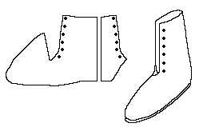
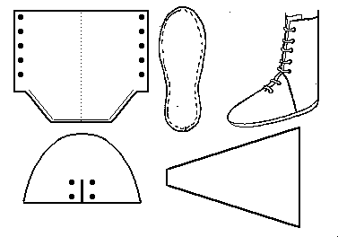

Front-Laced Boot
The design for this front-tied boot is based loosely on a description found in Schanck as well as pictures in Medieval Soldier.
It is made with a rand or a full welt. It is tied by a single lace, drawn though all the holes. It may be made with an attached tongue.
A slightly different interpretation of the materials is seen below. It is my interpretation, and may not represent anything found history.

Return to
[Index] or
[Next]
Footwear of the Middle Ages - Historical Shoe Designs/Number 61, by I. Marc Carlson. Copyright 1996
This page is given for the free exchange of information, provided the Author's Name is included in all future revisions, and no money change hands, other than as expressed in the Copyright Page.